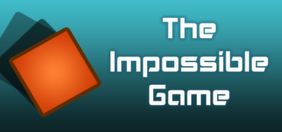

Disponível para: PC (Steam/Windows) e Mobile (iOS/Apple App Store, Android/Google Play Store, and Amazon Appstore)
Descrição:
Geometry Dash é um jogo de plataforma rítmico índie desenvolvido pela RobTop Games. O objetivo do jogo é controlar um pequeno cubo e navegar por níveis cheios de obstáculos. Os jogadores devem pular, voar e evitar obstáculos para completar cada nível. O jogo é conhecido por sua dificuldade desafiadora e pela comunidade ativa que cria níveis personalizados.
Curiosidades:
Geometry Dash é uma cópia
Geometry Dash é uma cópia do descontinuado jogo da Fluke Games "The Impossible Game", que tinha o mesmo conceito de jogabilidade e visuais semelhantes, tendo também um editor.

Demonlists
Parte da comunidade de Geometry Dash jogam e fazem mapas tão difíceis que foram feitos sites chamados de "demonlists" que listam os níveis mais difíceis do jogo. Esses sites costumam contar com moderação rigorosa e alguns com regras específicas, como o site que é mais levado a sério pela comunidade, o Pointercreate, que exige que o mapa esteja postado publicamente no servidor e que seja verificado, isto é, completado com prova por pelo menos um jogador sem o uso de hacks que interfiram na jogabilidade.
Nine Circles
"Nine Circles" de Zobros é um nível icônico por ser o que mais inspirou outros níveis na comunidade. Com sua decoração única e o efeito de cores vermelhas pulsando freneticamente no drop da música, fazer remakes desse nível se tornou uma tendência entre os criadores de níveis.
Nine Circles
Fairydust
Sakupen Circles
Sonic Wave
Pulo modo plataforma
No modo plataforma, o cubo faz uma animação ao pular que envolve esticar o seu sprite, que é possível recriar no css, que é usado para páginas web.
O nível customizado mais antigo disponível no jogo é "1st level" de TheRealStorm, seu id é 128. Robtop afirma que os níveis com ids mais antigos que esse foram criados por ele durante o desenvolvimento para testes. Mesmo assim, ainda existem boatos da própria comunidade de que alguns deles foram feitos por criadores, mas que foram deletados posteriormente, ficando inacessíveis.
Linguagem de programação
Geometry Dash é programado em C++ usando a engine de desenvolvimento de jogos chamada "Cocos2d-x".
Versão 2.2
A versão 2.2 de Geometry Dash, lançada em 2023, foi a atualização mais aguardada do jogo, apesar de levar longos 7 anos para ser desenvolvida, foi a atualização que mais revolucionou o editor, trazendo novas mecânicas e funcionalidades, fazendo o jogo voltar a fama que tinha no lançamento da 1.9, 2.0 e seus spin-offs.
Green users
Nas primeiras versões do jogo, os usuários podiam comentar e criar níveis sem a necessidade de uma conta, e eles eram conhecidos como "green users", pois os usuários sem uma conta podiam escolher seu username, porém aperecia em verde até criar uma conta.